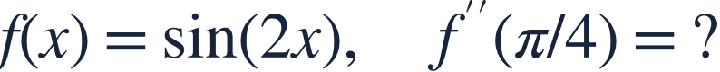
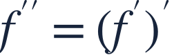
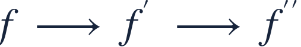
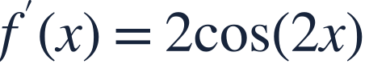
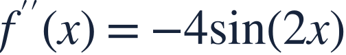
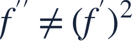
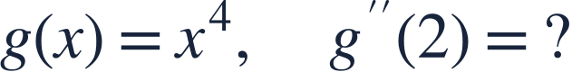

Higher derivatives
고계도함수

A second derivative measures how the first derivative changes.
이계도함수는 일계도함수가 어떻게 변하는지 나타냅니다.

A second derivative measures how the first derivative changes.
이계도함수는 일계도함수가 어떻게 변하는지 나타냅니다.

Differentiate once, then differentiate the whole result again.
한 번 미분한 결과 전체를 다시 미분하세요.

Each differentiation of a composite function needs its own inner derivative.
합성함수를 미분할 때마다 안의 도함수를 다시 곱해야 합니다.

The first chain-rule factor is 2.
첫 번째 연쇄법칙의 계수는 2입니다.

The second differentiation contributes another factor 2 and a minus sign.
두 번째 미분에서 2가 다시 곱해지고 음수가 붙습니다.
A negative second derivative means the slope is decreasing nearby.
이계도함수가 음수이면 주변에서 기울기가 감소합니다.

The second derivative is not the square of the first derivative.
이계도함수는 일계도함수의 제곱이 아닙니다.

Differentiate twice before evaluating.
두 번 미분한 뒤 값을 구하세요.